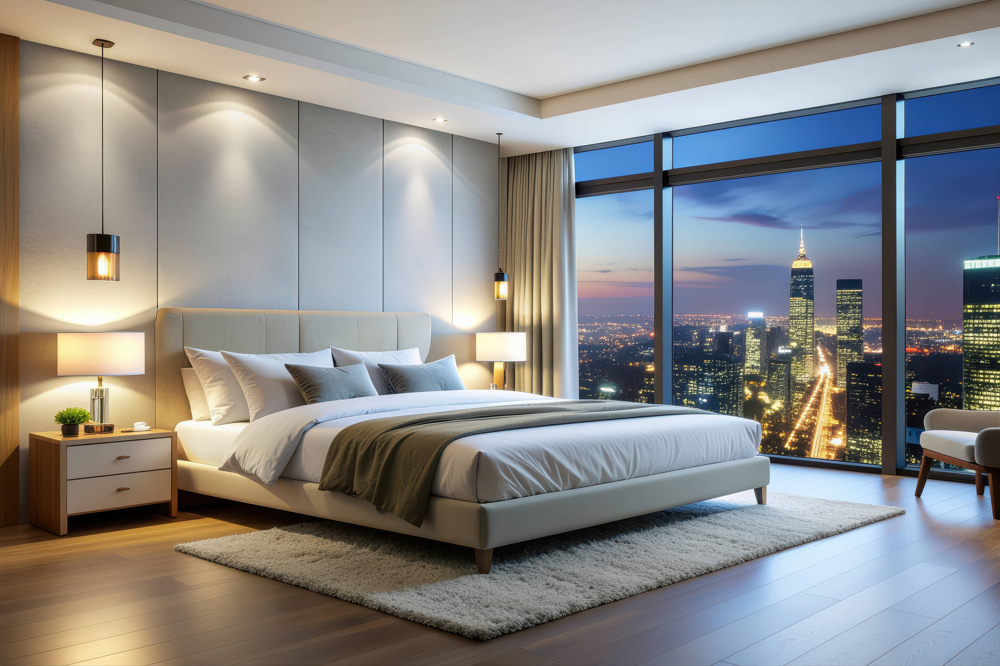

<div class="block" data-primary-position="top">
    <picture class="animate animate-fade-in">
        <source media="(prefers-color-scheme: light)" type="image/jxl"
            srcset="/Sandbox/img/responsive/tourism-photography-light-1.jxl 3840w, /Sandbox/img/responsive/tourism-photography-light-1-768.jxl 768w, /Sandbox/img/responsive/tourism-photography-light-1-1024.jxl 1024w, /Sandbox/img/responsive/tourism-photography-light-1-1366.jxl 1366w, /Sandbox/img/responsive/tourism-photography-light-1-1920.jxl 1920w, /Sandbox/img/responsive/tourism-photography-light-1-2560.jxl 2560w"
            sizes="(max-width: 768px) 100vw, (max-width: 1024px) 100vw, (max-width: 1366px) 100vw, (max-width: 1920px) 100vw, (max-width: 2560px) 100vw, 3840px">
        <source media="(prefers-color-scheme: dark)" type="image/jxl"
            srcset="/Sandbox/img/responsive/tourism-photography-dark-1.jxl 3840w, /Sandbox/img/responsive/tourism-photography-dark-1-768.jxl 768w, /Sandbox/img/responsive/tourism-photography-dark-1-1024.jxl 1024w, /Sandbox/img/responsive/tourism-photography-dark-1-1366.jxl 1366w, /Sandbox/img/responsive/tourism-photography-dark-1-1920.jxl 1920w, /Sandbox/img/responsive/tourism-photography-dark-1-2560.jxl 2560w"
            sizes="(max-width: 768px) 100vw, (max-width: 1024px) 100vw, (max-width: 1366px) 100vw, (max-width: 1920px) 100vw, (max-width: 2560px) 100vw, 3840px">
        <source media="(prefers-color-scheme: light)" type="image/avif"
            srcset="/Sandbox/img/responsive/tourism-photography-light-1.avif 3840w, /Sandbox/img/responsive/tourism-photography-light-1-768.avif 768w, /Sandbox/img/responsive/tourism-photography-light-1-1024.avif 1024w, /Sandbox/img/responsive/tourism-photography-light-1-1366.avif 1366w, /Sandbox/img/responsive/tourism-photography-light-1-1920.avif 1920w, /Sandbox/img/responsive/tourism-photography-light-1-2560.avif 2560w"
            sizes="(max-width: 768px) 100vw, (max-width: 1024px) 100vw, (max-width: 1366px) 100vw, (max-width: 1920px) 100vw, (max-width: 2560px) 100vw, 3840px">
        <source media="(prefers-color-scheme: dark)" type="image/avif"
            srcset="/Sandbox/img/responsive/tourism-photography-dark-1.avif 3840w, /Sandbox/img/responsive/tourism-photography-dark-1-768.avif 768w, /Sandbox/img/responsive/tourism-photography-dark-1-1024.avif 1024w, /Sandbox/img/responsive/tourism-photography-dark-1-1366.avif 1366w, /Sandbox/img/responsive/tourism-photography-dark-1-1920.avif 1920w, /Sandbox/img/responsive/tourism-photography-dark-1-2560.avif 2560w"
            sizes="(max-width: 768px) 100vw, (max-width: 1024px) 100vw, (max-width: 1366px) 100vw, (max-width: 1920px) 100vw, (max-width: 2560px) 100vw, 3840px">
        <source media="(prefers-color-scheme: light)" type="image/webp"
            srcset="/Sandbox/img/responsive/tourism-photography-light-1.webp 3840w, /Sandbox/img/responsive/tourism-photography-light-1-768.webp 768w, /Sandbox/img/responsive/tourism-photography-light-1-1024.webp 1024w, /Sandbox/img/responsive/tourism-photography-light-1-1366.webp 1366w, /Sandbox/img/responsive/tourism-photography-light-1-1920.webp 1920w, /Sandbox/img/responsive/tourism-photography-light-1-2560.webp 2560w"
            sizes="(max-width: 768px) 100vw, (max-width: 1024px) 100vw, (max-width: 1366px) 100vw, (max-width: 1920px) 100vw, (max-width: 2560px) 100vw, 3840px">
        <source media="(prefers-color-scheme: dark)" type="image/webp"
            srcset="/Sandbox/img/responsive/tourism-photography-dark-1.webp 3840w, /Sandbox/img/responsive/tourism-photography-dark-1-768.webp 768w, /Sandbox/img/responsive/tourism-photography-dark-1-1024.webp 1024w, /Sandbox/img/responsive/tourism-photography-dark-1-1366.webp 1366w, /Sandbox/img/responsive/tourism-photography-dark-1-1920.webp 1920w, /Sandbox/img/responsive/tourism-photography-dark-1-2560.webp 2560w"
            sizes="(max-width: 768px) 100vw, (max-width: 1024px) 100vw, (max-width: 1366px) 100vw, (max-width: 1920px) 100vw, (max-width: 2560px) 100vw, 3840px">
        <source media="(prefers-color-scheme: light)" type="image/jpeg"
            srcset="/Sandbox/img/responsive/tourism-photography-light-1.jpeg 3840w, /Sandbox/img/responsive/tourism-photography-light-1-768.jpeg 768w, /Sandbox/img/responsive/tourism-photography-light-1-1024.jpeg 1024w, /Sandbox/img/responsive/tourism-photography-light-1-1366.jpeg 1366w, /Sandbox/img/responsive/tourism-photography-light-1-1920.jpeg 1920w, /Sandbox/img/responsive/tourism-photography-light-1-2560.jpeg 2560w"
            sizes="(max-width: 768px) 100vw, (max-width: 1024px) 100vw, (max-width: 1366px) 100vw, (max-width: 1920px) 100vw, (max-width: 2560px) 100vw, 3840px">
        <source media="(prefers-color-scheme: dark)" type="image/jpeg"
            srcset="/Sandbox/img/responsive/tourism-photography-dark-1.jpeg 3840w, /Sandbox/img/responsive/tourism-photography-dark-1-768.jpeg 768w, /Sandbox/img/responsive/tourism-photography-dark-1-1024.jpeg 1024w, /Sandbox/img/responsive/tourism-photography-dark-1-1366.jpeg 1366w, /Sandbox/img/responsive/tourism-photography-dark-1-1920.jpeg 1920w, /Sandbox/img/responsive/tourism-photography-dark-1-2560.jpeg 2560w"
            sizes="(max-width: 768px) 100vw, (max-width: 1024px) 100vw, (max-width: 1366px) 100vw, (max-width: 1920px) 100vw, (max-width: 2560px) 100vw, 3840px">
        
    </picture>
    <div aria-live="polite">
        <div role="group"></div>
    </div>
</div>